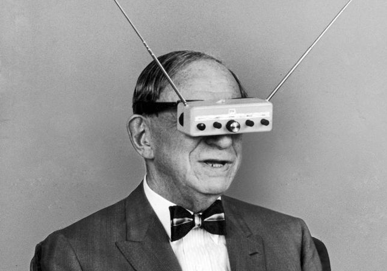
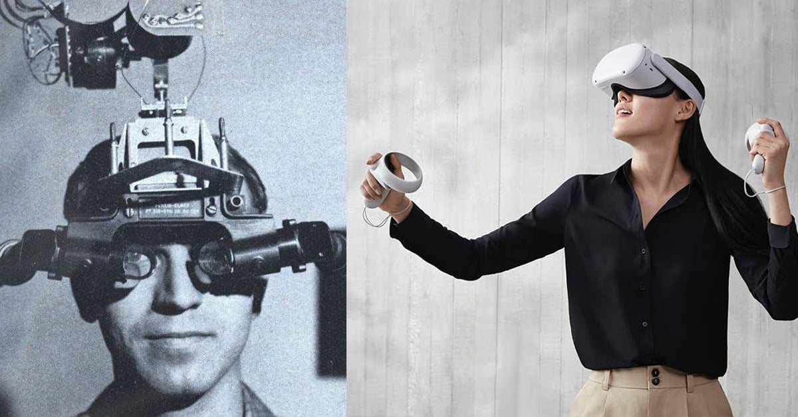
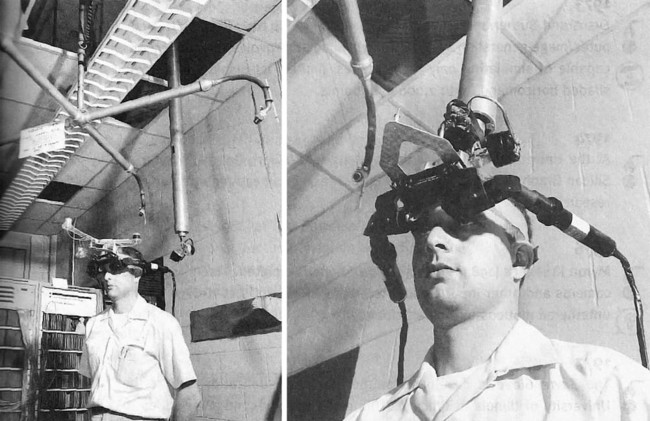

Historia de la Realidad Virtual
La historia de la Realidad Virtual empezó a principios del siglo XX, allá por el año 1935. En ese año, encontramos la primera referencia específica a unas gafas de Realidad Virtual, cuyo autor fue el escritor de ciencia ficción Stanley G. Weinbaum en su cuento titulado “Las gafas del Pigmalión”.
Más Información¿Cómo funciona la Realidad Virtual?
Resulta interesante entender cómo funcionan las gafas de Realidad Virtual. El sistema de visualización está formado por dos pantallas en las que el usuario puede ver una secuencia de video diferente en cada ojo por medio de la visión estereoscópica.
Experiencias multisensoriales
A pesar de que ese casco de Realidad Virtual actualmente puede parecer muy rudimentario, el concepto era ya muy similar a los equipos actuales.

Videoplace (1970)
A mediados de la década de 1970, Myron Krueger creó un entorno físico interactivo llamado "Videoplace" usando proyectores y cámaras de video.
Más InformaciónExpresión y Simulación
Demostró el potencial de los entornos virtuales para la expresión artística y la Fuerza Aérea experimentó con simulaciones de realidad virtual.
Más Información
Super Cockpit (1980)
A fines de la década de 1980, lanzaron el programa "Super Cockpit", una cabina virtual para entrenar a los pilotos de combate.
Más Información